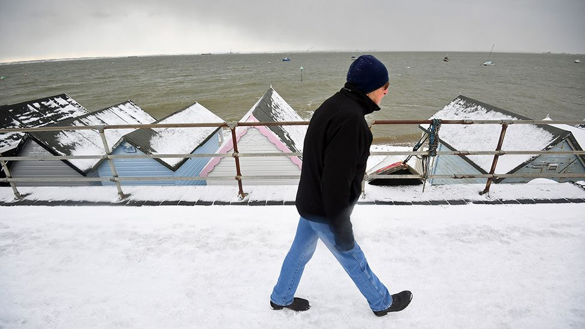
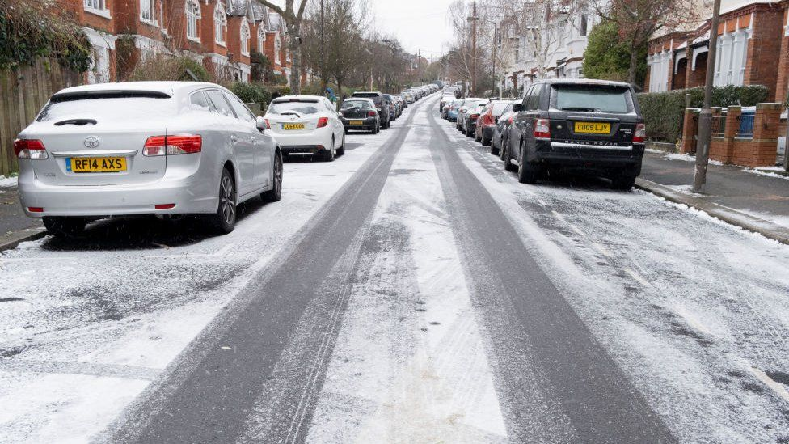

By Rebecca Marston
Business reporter,BBC News
Fuel use and bills are likely to rise, and with more people at home under lockdown, those bills could grow very steeply.
However, there is help on hand for people receiving benefits, in the form of
Cold Weather Payments are a government benefit top-up to help with fuel bills during times of exceptional cold weather.
These payments are not age-related. To qualify, you must already be eligible for one of five benefits and fulfil additional criteria -outline on the government website:
Each Cold Weather Payment is paid for a seven-day period and is worth £25.
The scheme covers the period between 1 November and 31 March each year.
Hospital stays can affect payments,
while benefit offices also want to know if you've had a baby or if a child under five lives with you.
The average temperature must be zero degrees Celsius - or less - for seven days in a row.
This temperature needs to be recorded by the weather station nearest to your postcode.
So far this year, there have been 58 cold weather triggers from the 95 weather stations in England, Scotland and Wales.
Northern Ireland has seven weather stations it uses to trigger its cold weather payments.
In England, Scotland and Wales, 705,000 Cold Weather Payments have been made: 341,000 in England, 305,000 in Scotland and 59,000 in Wales.
You can check whether you're eligible by entering the first part of your postcode here.
The Winter Fuel Payment is a different benefit, paid out to pensioners.
All 11.4 million pensioners receive that benefit, which is between £100 and £300, regardless of weather conditions.
It is calculated according to age and whether you live alone.
The good news is, you don't have to do anything in order to get them.
As the system knows all about you anyway,
payments arrive automatically and are paid straight into your bank account within two weeks.
Each period of very cold weather in your area should trigger a payment.
It's paid into the same bank or building society account as your benefit payments.
Cold Weather Payments do not affect your other benefits.
If you do not receive your Cold Weather Payment, tell the pension centre or Jobcentre Plus office.
Please include a contact number if you are willing to speak to a BBC journalist.
You can also get in touch in the following ways: